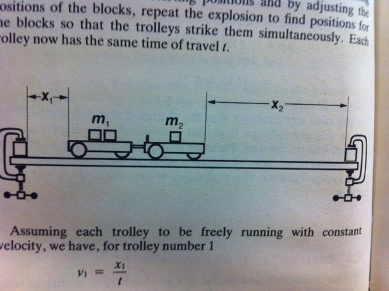

-
The fastest recorded delivery for a cricket ball is \(\text{161,3}\)~\(\text{km·hr-1}\), bowled by Shoaib Akhtar of Pakistan during a match against England in the 2003 Cricket World Cup, held in South Africa. Calculate the ball's momentum if it has a mass of \(\text{160}\)~\(\text{g}\).
-
The fastest tennis service by a man is \(\text{246,2}\)~\(\text{km·hr-1}\) by Andy Roddick of the United States of America during a match in London in 2004. Calculate the ball's momentum if it has a mass of \(\text{58}\)~\(\text{g}\).
-
The fastest server in the women's game is Venus Williams of the United States of America, who recorded a serve of \(\text{205}\)~\(\text{km·hr-1}\) during a match in Switzerland in 1998. Calculate the ball's momentum if it has a mass of \(\text{58}\)~\(\text{g}\).
-
If you had a choice of facing Shoaib, Andy or Venus and didn't want to get hurt, who would you choose based on the momentum of each ball.
Momentum and impulse
Introduction
In Grade 10 we studied motion but not what caused the motion. In this chapter we will learn that a net force is needed to cause motion. We recall what a force is and learn about how force and motion are related. We are introduced to two new concepts, momentum and impulse, and we learn more about turning forces and the force of gravity.


- Units and unit conversions — Physical Sciences, Grade 10, Science skills
- Equations — Mathematics, Grade 10, Equations and inequalities
- Techniques of vector addition — Physical Sciences, Grade 10, Vectors and scalars
Momentum
Momentum is a physical quantity which is closely related to forces. Momentum is a property which applies to moving objects, in fact it is mass in motion. If something has mass and it is moving then it has momentum.
- Momentum
-
The linear momentum of a particle (object) is a vector quantity equal to the product of the mass of the particle (object) and its velocity.
The momentum (symbol ) of an object of mass m moving at velocity is:
Momentum is related to both the mass and velocity of an object. A small car travelling at the same velocity as a big truck will have a smaller momentum than the truck. The smaller the mass, the smaller the momentum for a fixed velocity. If the mass is constant then the greater the velocity the greater the momentum. The momentum will always be in the same direction as the velocity because mass is a scalar not a vector.
Vector nature of momentum
A car travelling at \(\text{120}\)~\(\text{km·hr-1}\) will have a larger momentum than the same car travelling at \(\text{60}\)~\(\text{km·hr-1}\). Momentum is also related to velocity; the smaller the velocity, the smaller the momentum.
Different objects can also have the same momentum, for example a car travelling slowly can have the same momentum as a motorcycle travelling relatively fast. We can easily demonstrate this.
Consider a car of mass \(\text{1000}\)~\(\text{kg}\) with a velocity of \(\text{8}\)~\(\text{m·s-1}\) (about \(\text{30}\)~\(\text{km·hr-1}\)) East. The momentum of the car is therefore:
Now consider a motorcycle of mass \(\text{250}\)~\(\text{kg}\) travelling at \(\text{32}\)~\(\text{m·s-1}\) (about \(\text{115}\)~\(\text{km·hr-1}\)). The momentum of the motorcycle is:
Even though the motorcycle is considerably lighter than the car, the fact that the motorcycle is travelling much faster than the car means that the momentum of both vehicles is the same.
From the calculations above, you are able to derive the unit for momentum as \(\text{kg·m·s-1}\).
Momentum is also vector quantity, because it is the product of a scalar (m) with a vector .
This means that whenever we calculate the momentum of an object, we need to include the direction of the momentum.
Momentum of a soccer ball
A soccer ball of mass \(\text{420}\)~\(\text{g}\) is kicked at \(\text{20}\)~\(\text{m·s-1}\) towards the goal post. Calculate the momentum of the ball.
Identify what information is given and what is asked for
The question explicitly gives:
-
the mass of the ball, and
-
the velocity of the ball.
The mass of the ball must be converted to SI units.
We are asked to calculate the momentum of the ball. From the definition of momentum, we see that we need the mass and velocity of the ball, which we are given.
Do the calculation
We calculate the magnitude of the momentum of the ball,
Quote the final answer
We quote the answer with the direction of motion included, = \(\text{8,40}\)~\(\text{kg·m·s-1}\) in the direction of the goal post.
Momentum of a cricket ball
A cricket ball of mass \(\text{160}\)~\(\text{g}\) is bowled at \(\text{40}\)~\(\text{m·s-1}\) towards a batsman. Calculate the momentum of the cricket ball.

Identify what information is given and what is asked for
The question explicitly gives
-
the mass of the ball (m = \(\text{160}\)~\(\text{g}\) = \(\text{0,16}\)~\(\text{kg}\)), and
-
the velocity of the ball = \(\text{40}\)~\(\text{m·s-1}\) towards the batsman)
To calculate the momentum we will use
Do the calculation
Momentum of the Moon
The Moon is \(\text{384\ 400}\)~\(\text{km}\) away from the Earth and orbits the Earth in \(\text{27,3}\) days. If the Moon has a mass of \(\text{7,35} \times \text{10}^{\text{22}}\)~\(\text{kg}\), what is the magnitude of its momentum if we assume a circular orbit?
Identify what information is given and what is asked for
The question explicitly gives
-
the mass of the Moon (m = \(\text{7,35} \times \text{10}^{\text{22}}\)~\(\text{kg}\))
-
the distance to the Moon (\(\text{384\ 400}\)~\(\text{km}\) = \(\text{384\ 400\ 000}\)~\(\text{m}\) = \(\text{3,844} \times \text{10}^{\text{8}}\)~\(\text{m}\))
-
the time for one orbit of the Moon ()
We are asked to calculate only the magnitude of the momentum of the Moon (i.e. we do not need to specify a direction). In order to do this we require the mass and the magnitude of the velocity of the Moon, since
Find the magnitude of the velocity of the Moon
The magnitude of the average velocity is the same as the speed. Therefore:
We are given the time the Moon takes for one orbit but not how far it travels in that time. However, we can work this out from the distance to the Moon and the fact that the Moon has a circular orbit. Using the equation for the circumference, C, of a circle in terms of its radius, we can determine the distance travelled by the Moon in one orbit:
Combining the distance travelled by the Moon in an orbit and the time taken by the Moon to complete one orbit, we can determine the magnitude of the Moon's velocity or speed,
Finally calculate the momentum and quote the answer
The magnitude of the Moon's momentum is:
As we have said, momentum is a vector quantity. Since momentum is a vector, the techniques of vector addition discussed in Vectors and scalars in Grade 10 must be used when dealing with momentum.
Change in momentum
Particles or objects can collide with other particles or objects, we know that this will often change their velocity (and maybe their mass) so their momentum is likely to change as well. We will deal with collisions in detail a little bit later but we are going to start to look at the details of the change in momentum for a single particle or object.
Case 1: Object bouncing off a wall
Lets start with a simple picture, a ball of mass, , moving with initial velocity, , to the right towards a wall. It will have momentum to the right as shown in this picture:
<code>
(0,3)(9,5)
\psline[linecolor=orange]{->}(2,4)(6,4)
\uput[u](4,4){$\vec{p}_i$}
\pscircle[fillcolor=yellow!80!black,fillstyle=solid,shadow=true](2,4){9pt}
\psframe[fillcolor=gray,fillstyle=solid,linecolor=gray!40!black](7,4.75)(7.5,3.25)
</code>The ball bounces off the wall. It will now be moving to the left, with the same mass, but a different velocity, and therefore, a different momentum, , as shown in this picture:
<code>
(0,1)(9,3)
\psframe[fillcolor=gray,fillstyle=solid,linecolor=gray!40!black](7,2.75)(7.5,1.25)
\psline[]{->}(6,2)(4,2)
\uput[u](5,2){$\vec{p}_f$}
\pscircle[fillcolor=yellow!80!black,fillstyle=solid,shadow=true](6,2){9pt}
</code>We know that the final momentum vector must be the sum of the initial momentum vector and the change in momentum vector, . This means that, using tail-to-head vector addition, , must be the vector that starts at the head of and ends on the head of as shown in this picture:
<code>
(0,-1.5)(9,1)
\rput(.5,0){
\psline[linecolor=orange]{->}(3,0)(7,0)
\psline[linecolor=blue]{->}(7,-0.5)(1,-0.5)
\psdot(3,0)
\psline[linecolor=blue,linestyle=dotted]{-}(1,-0.5)(1,0)
\psline[linecolor=blue,linestyle=dotted]{-}(7,-0.5)(7,0)
\psline[]{</code>We also know from algebraic addition of vectors that: If we put this all together we can show the sequence and the change in momentum in one diagram:
<code>
(0,-1.5)(9,5)
\psline[linecolor=orange]{->}(2,4)(6,4)
\uput[u](4,4){$\vec{p}_i$}
\pscircle[fillcolor=yellow!80!black,fillstyle=solid,shadow=true](2,4){9pt}
% Wall
\psframe[fillcolor=gray,fillstyle=solid,linecolor=gray!40!black](7,4.75)(7.5,3.25)
\psframe[fillcolor=gray,fillstyle=solid,linecolor=gray!40!black](7,2.75)(7.5,1.25)
\psline[linestyle=dotted,linecolor=gray!30!black](1,3)(8,3)
\psline[linestyle=dotted,linecolor=gray!30!black](1,1)(8,1)
\psline[]{->}(6,2)(4,2)
\uput[u](5,2){$\vec{p}_f$}
\pscircle[fillcolor=yellow!80!black,fillstyle=solid,shadow=true](6,2){9pt}
\rput(.5,0){
\psline[linecolor=orange]{->}(3,0)(7,0)
\psline[linecolor=blue]{->}(7,-0.5)(1,-0.5)
\psdot(3,0)
\psline[linecolor=blue,linestyle=dotted]{-}(1,-0.5)(1,0)
\psline[linecolor=blue,linestyle=dotted]{-}(7,-0.5)(7,0)
\psline[]{</code>We have just shown the case for a rebounding object. There are a few other cases we can use to illustrate the basic features but they are all built up in the same way.
Case 2: Object stops

In some scenarios the object may come to a standstill (rest). An example of such a case is a tennis ball hitting the net. The net stops the ball but doesn't cause it to bounce back. At the instant before it falls to the ground its velocity is zero. This scenario is described in this image:
<code>
(0,-1.5)(12,5)
\psline[linecolor=orange]{->}(2,4)(6,4)
\uput[u](4,4){$\vec{p}_i$}
\pscircle[fillcolor=yellow!80!black,fillstyle=solid,shadow=true](2,4){9pt}
% Wall
\psframe[fillcolor=gray!50!white,fillstyle=solid,linecolor=gray!70!white](7,4.75)(7.15,3.25)
\psframe[fillcolor=gray!50!white,fillstyle=solid,linecolor=gray!70!white](7,2.75)(7.15,1.25)
\psline[linestyle=dotted,linecolor=gray!30!black](1,3)(11,3)
\psline[linestyle=dotted,linecolor=gray!30!black](1,1)(11,1)
\uput[u](6,2.25){$\vec{p}_f=0$}
\pscircle[fillcolor=yellow!80!black,fillstyle=solid,shadow=true](6.5,2){9pt}
\rput(1,0){
\psline[linecolor=orange]{->}(3,0)(7,0)
\psline[linecolor=blue]{->}(7,-0.5)(3,-0.5)
\psdot(3,0)
\psline[linecolor=blue,linestyle=dotted]{-}(3,-0.5)(3,0)
\psline[linecolor=blue,linestyle=dotted]{-}(7,-0.5)(7,0)
\uput[u](3,0){$\vec{p}_f$}
\uput[u](5,0){$\vec{p}_i$}
\uput[d](4.5,-0.5){$\Delta\vec{p}=\vec{p}_f-\vec{p}_i$}
}
</code>Case 3: Object continues more slowly
In this case, the object continue in the same direction but more slowly. To give this some context, this could happen when a ball hits a glass window and goes through it or an object sliding on a frictionless surface encounters a small rough patch before carrying on along the frictionless surface.

<code>
(0,-1.5)(12,5)
\psline[linecolor=orange]{->}(2,4)(6,4)
\uput[u](4,4){$\vec{p}_i$}
\pscircle[fillcolor=yellow!80!black,fillstyle=solid,shadow=true](2,4){9pt}
% Wall
\psframe[fillcolor=gray!50!white,fillstyle=solid,linecolor=gray!70!white](7,4.75)(7.15,3.25)
\psframe[fillcolor=gray!50!white,fillstyle=solid,linecolor=gray!70!white](7,2.75)(7.15,1.25)
\psline[linestyle=dotted,linecolor=gray!30!black](1,3)(11,3)
\psline[linestyle=dotted,linecolor=gray!30!black](1,1)(11,1)
\psline[]{->}(8,2)(10,2)
\uput[u](9,2){$\vec{p}_f$}
\pscircle[fillcolor=yellow!80!black,fillstyle=solid,shadow=true](8,2){9pt}
\rput(1,0){
\psline[linecolor=orange]{->}(3,0)(7,0)
\psline[linecolor=blue]{->}(7,-0.5)(5,-0.5)
\psdot(3,0)
\psline[linecolor=blue,linestyle=dotted]{-}(5,-0.5)(5,0)
\psline[linecolor=blue,linestyle=dotted]{-}(7,-0.5)(7,0)
\psline[]{->}(3,0)(5,0)
\uput[u](4,0){$\vec{p}_f$}
\uput[u](5,0){$\vec{p}_i$}
\uput[d](6,-0.5){$\Delta\vec{p}=\vec{p}_f-\vec{p}_i$}
}
</code>Important: note that even though the momentum remains in the same direction the change in momentum is in the opposite direction.
Case 4: Object gets a boost
In this case the object interacts with something that increases the velocity it has without changing its direction. For example, in squash the ball can bounce off a back wall towards the front wall and a player can hit it with a racquet in the same direction, increasing its velocity.

If we analyse this scenario in the same way as the first 3 cases, it will look like this:
<code>
(0,-1.5)(12,5)
\psline[linecolor=orange]{->}(2,4)(4,4)
\uput[u](3,4){$\vec{p}_i$}
\pscircle[fillcolor=yellow!80!black,fillstyle=solid,shadow=true](2,4){9pt}
% Wall
%\psframe[fillcolor=gray!50!white,fillstyle=solid,linecolor=gray!70!white](5,4.75)(5.15,3.25)
\psframe[fillcolor=gray!50!white,fillstyle=solid,linecolor=gray!70!white](5,2.75)(5.15,1.25)
\psline[linestyle=dotted,linecolor=gray!30!black](1,3)(11,3)
\psline[linestyle=dotted,linecolor=gray!30!black](1,1)(11,1)
\psline[]{->}(6,2)(10,2)
\uput[u](8,2){$\vec{p}_f$}
\pscircle[fillcolor=yellow!80!black,fillstyle=solid,shadow=true](6,2){9pt}
\rput(1,0){
\psline[linecolor=orange,linewidth=1.5pt]{->}(3,0)(5,0)
\psline[linecolor=blue]{->}(5,-0.5)(7,-0.5)
\psdot(3,0)
\psline[linecolor=blue,linestyle=dotted]{-}(5,-0.5)(5,0)
\psline[linecolor=blue,linestyle=dotted]{-}(7,-0.5)(7,0)
\psline[]{->}(3,0)(7,0)
\uput[u](5,0){$\vec{p}_f$}
\uput[u](4,0){$\vec{p}_i$}
\uput[d](6,-0.5){$\Delta\vec{p}=\vec{p}_f-\vec{p}_i$}
}
</code>Case 5: Vertical bounce
All of the example that we've shown so far have been in the horizontal direction. That is just a coincidence, this approach applies for vertical or horizontal cases. In fact, it applies to any scenario where the initial and final vectors fall on the same line, any 1-dimensional (1D) problem. We will only deal with 1D scenarios in this chapter. For example, a stationary basketball player bouncing a ball.

To illustrate the point, here is what the analysis would look like for a ball bouncing off the floor:
<code>
(0,-.5)(6.5,10)
\psline[linecolor=orange]{->}(1,8)(1,4)
\uput[l](1,6){$\vec{p}_i$}
\pscircle[fillcolor=yellow!80!black,fillstyle=solid,shadow=true](1,8){9pt}
% Wall
\psframe[fillcolor=gray,fillstyle=solid,linecolor=gray!40!black](0.5,.75)(1.5,1.25)
\psframe[fillcolor=gray,fillstyle=solid,linecolor=gray!40!black](2.5,.75)(3.5,1.25)
\psline[linestyle=dotted,linecolor=gray!30!black](2,9)(2,.5)
\psline[linestyle=dotted,linecolor=gray!30!black](4,9)(4,.5)
\psline[]{->}(3,2)(3,4)
\uput[l](3,3){$\vec{p}_f$}
\pscircle[fillcolor=yellow!80!black,fillstyle=solid,shadow=true](3,2){9pt}
\rput(0,1){
\psline[linecolor=orange]{->}(5,5)(5,1)
\uput[l](5,3){$\vec{p}_i$}
\psline[]{->}(5,5)(5,7)
\uput[l](5,6){$\vec{p}_f$}
\psline[linecolor=blue]{->}(5.5,1)(5.5,7)
\psdot(5,5)
\psline[linecolor=blue,linestyle=dotted]{-}(5,1)(5.5,1)
\psline[linecolor=blue,linestyle=dotted]{-}(5,7)(5.5,7)
\uput[r]{90}(5.5,4){$\Delta\vec{p}=\vec{p}_f-\vec{p}_i$}
}
</code>Two golf balls roll towards each other. They each have a mass of \(\text{100}\)~\(\text{g}\). Ball 1 is moving at to the right, while ball 2 is moving at to the left. Calculate the total momentum of the system.
Two motorcycles are involved in a head on collision. Motorcycle A has a mass of \(\text{200}\)~\(\text{kg}\) and was travelling at \(\text{120}\)~\(\text{km·hr-1}\) south. Motor cycle B has a mass of \(\text{250}\)~\(\text{kg}\) and was travelling north at \(\text{100}\)~\(\text{km·hr-1}\). A and B are about to collide. Calculate the momentum of the system before the collision takes place.
Newton's Second Law revisited
In the previous section we considered a number of scenarios where the momentum of an object changed but we didn't look at the details of what caused the momentum to change. In each case it interacted with something which we know would have exerted a force on the object and we've learnt a lot about forces in Grade 11 so now we can tie the two together.
You have learnt about Newton's Laws of motion in Grade 11. We know that an object will continue in its state of motion unless acted on by a force so unless a force acts the velocity will not change and therefore the momentum will not change. If a force is acting on an object then Newton's Second Law describes the relationship between the motion of an object and the net force on the object:
We can therefore say that because a net force causes an object to change its motion, it also causes its momentum to change.
We can now define Newton's Second Law of motion in terms of momentum.
- Newton's Second Law of Motion (N2)
-
The net or resultant force acting on an object is equal to the rate of change of momentum.
Mathematically, Newton's Second Law can be stated as:
Let us apply this to the last case from the previous section, consider a tennis ball (mass = \(\text{0,1}\)~\(\text{kg}\)) that is dropped at an initial velocity of \(\text{5}\)~\(\text{m·s-1}\) and bounces back at a final velocity of \(\text{3}\)~\(\text{m·s-1}\). As the ball approaches the floor it has an initial momentum when it moves away from the floor it has a final momentum . The bounce on the floor can be thought of as a collision taking place where the floor exerts a force on the tennis ball to change its momentum.
<code>
(0,-.5)(6.5,10)
\psline[linecolor=orange]{->}(1,8)(1,4)
\uput[l](1,6){$\vec{p}_i$}
\pscircle[fillcolor=yellow!80!black,fillstyle=solid,shadow=true](1,8){9pt}
% Wall
\psframe[fillcolor=gray,fillstyle=solid,linecolor=gray!40!black](0.5,.75)(1.5,1.25)
\psframe[fillcolor=gray,fillstyle=solid,linecolor=gray!40!black](2.5,.75)(3.5,1.25)
\psline[linestyle=dotted,linecolor=gray!30!black](2,9)(2,.5)
\psline[linestyle=dotted,linecolor=gray!30!black](4,9)(4,.5)
\psline[]{->}(3,2)(3,4)
\uput[l](3,3){$\vec{p}_f$}
\pscircle[fillcolor=yellow!80!black,fillstyle=solid,shadow=true](3,2){9pt}
\rput(0,1){
\psline[linecolor=orange]{->}(5,5)(5,1)
\uput[l](5,3){$\vec{p}_i$}
\psline[]{->}(5,5)(5,7)
\uput[l](5,6){$\vec{p}_f$}
\psline[linecolor=blue]{->}(5.5,1)(5.5,7)
\psdot(5,5)
\psline[linecolor=blue,linestyle=dotted]{-}(5,1)(5.5,1)
\psline[linecolor=blue,linestyle=dotted]{-}(5,7)(5.5,7)
\uput[r]{90}(5.5,4){$\Delta\vec{p}=\vec{p}_f-\vec{p}_i$}
}
</code>Remember: momentum and velocity are vectors so we have to choose a direction as positive. For this example we choose the initial direction of motion as positive, in other words, downwards is positive.
When the tennis ball bounces back it changes direction. The final velocity will thus have a negative value because it is in the negative direction. The momentum after the bounce can be calculated as follows:
Now let us look at what happens to the momentum of the tennis ball. The momentum changes during this bounce.
We keep our initial choice of downwards as positive. This means that the final momentum will have a negative number.
You will notice that this number is bigger than the previous momenta calculated. This should be the case as the change has to cancel out the initial momentum and then still be as large as the final momentum over and above the initial momentum.
Change in Momentum
A tennis ball of mass \(\text{58}\)~\(\text{g}\) strikes a wall perpendicularly with a velocity of \(\text{10}\)~\(\text{m·s-1}\). It rebounds at a velocity of \(\text{8}\)~\(\text{m·s-1}\). Calculate the change in the momentum of the tennis ball caused by the wall.
Identify the information given and what is asked
The question explicitly gives a number of values which we identify and convert into SI units:
-
the ball's mass (m = \(\text{58}\)~\(\text{g}\)=\(\text{0,058}\)~\(\text{kg}\)),
-
the ball's initial velocity () towards the wall, and
-
the ball's final velocity () away from the wall
We are asked to calculate the change in momentum of the ball,
<code>
(0,-1.5)(9,5)
\psline[linecolor=orange]{->}(2,4)(6,4)
\uput[u](4,4){$\vec{p}_i$}
\pscircle[fillcolor=yellow!80!black,fillstyle=solid,shadow=true](2,4){9pt}
% Wall
\psframe[fillcolor=gray,fillstyle=solid,linecolor=gray!40!black](7,4.75)(7.5,3.25)
\psframe[fillcolor=gray,fillstyle=solid,linecolor=gray!40!black](7,2.75)(7.5,1.25)
\psline[linestyle=dotted,linecolor=gray!30!black](1,3)(8,3)
\psline[linestyle=dotted,linecolor=gray!30!black](1,1)(8,1)
\psline[]{->}(6,2)(4,2)
\uput[u](5,2){$\vec{p}_f$}
\pscircle[fillcolor=yellow!80!black,fillstyle=solid,shadow=true](6,2){9pt}
\rput(.5,0){
\psline[linecolor=orange]{->}(3,0)(7,0)
\psline[linecolor=blue]{->}(7,-0.5)(1,-0.5)
\psdot(3,0)
\psline[linecolor=blue,linestyle=dotted]{-}(1,-0.5)(1,0)
\psline[linecolor=blue,linestyle=dotted]{-}(7,-0.5)(7,0)
\psline[]{</code>We have everything we need to find . Since the initial momentum is directed towards the wall and the final momentum is away from the wall, we can use the algebraic method of subtraction discussed in Vectors in Grade 10.
Choose a frame of reference
Let us choose towards the wall as the positive direction.
Do the calculation and quote the answer
We suggest a vector diagram to illustrate p initial and p final and delta p. Also link to pHet animation
Change in Momentum
A rubber ball of mass \(\text{0,8}\)~\(\text{kg}\) is dropped and strikes the floor with an initial velocity of \(\text{6}\)~\(\text{m·s-1}\). It bounces back with a final velocity of \(\text{4}\)~\(\text{m·s-1}\). Calculate the change in the momentum of the rubber ball caused by the floor.

<code>
(-1,-.5)(4.5,10)
\psline[linecolor=orange]{->}(1,8)(1,4)
\uput[l](1,6){\(\text{6}\)~\(\text{m·s<sup>-1</sup>}\)}
\pscircle[fillcolor=purple!80!black,fillstyle=solid,shadow=true](1,8){9pt}
% Wall
\psframe[fillcolor=gray,fillstyle=solid,linecolor=gray!40!black](0.5,.75)(1.5,1.25)
\psframe[fillcolor=gray,fillstyle=solid,linecolor=gray!40!black](2.5,.75)(3.5,1.25)
\psline[linestyle=dotted,linecolor=gray!30!black](2,9)(2,.5)
%\psline[linestyle=dotted,linecolor=gray!30!black](4,9)(4,.5)
\psline[]{->}(3,2)(3,4)
\uput[r](3,3){\(\text{4}\)~\(\text{m·s<sup>-1</sup>}\)}
\pscircle[fillcolor=purple!80!black,fillstyle=solid,shadow=true](3,2){9pt}
%\rput(0,1){
%\psline[linecolor=orange]{->}(5,5)(5,1)
%\uput[l](5,3){$\vec{p}_i$}
%\psline[]{->}(5,5)(5,7)
%\uput[l](5,6){$\vec{p}_f$}
%\psline[linecolor=blue]{->}(5.5,1)(5.5,7)
%\psdot(5,5)
%\psline[linecolor=blue,linestyle=dotted]{-}(5,1)(5.5,1)
%\psline[linecolor=blue,linestyle=dotted]{-}(5,7)(5.5,7)
%\uput[r]{90}(5.5,4){$\Delta\vec{p}=\vec{p}_f-\vec{p}_i$}
%}
</code>Identify the information given and what is asked
The question explicitly gives a number of values which we identify and convert into SI units:
-
the ball's mass (m = \(\text{0,8}\)~\(\text{kg}\)),
-
the ball's initial velocity () downwards, and
-
the ball's final velocity () upwards
We are asked to calculate the change in momentum of the ball,
Do the calculation and quote the answer
Let us choose down as the positive direction.
Change in momentum
A regulation squash ball weighs \(\text{24}\)~\(\text{g}\). In a squash match a ball bounces off the back wall in the direction of the front wall at \(\text{1}\)~\(\text{m·s-1}\) before a player hits it with a racquet. After being struck towards the front wall the ball is moving at \(\text{20}\)~\(\text{m·s-1}\). What is the change in momentum?
Identify the information given and what is asked
The question explicitly gives a number of values which we identify and convert into SI units:
-
the ball's mass (m = \(\text{24}\)~\(\text{g}\)=\(\text{0,024}\)~\(\text{kg}\)),
-
the ball's initial velocity () towards the front wall, and
-
the ball's final velocity () towards the front wall
We are asked to calculate the change in momentum of the ball,
<code>
(0,-1.5)(12,5)
\psline[linecolor=orange]{->}(2,4)(4,4)
\uput[u](3,4){$\vec{p}_i$}
\pscircle[fillcolor=yellow!80!black,fillstyle=solid,shadow=true](2,4){9pt}
% Wall
%\psframe[fillcolor=gray!50!white,fillstyle=solid,linecolor=gray!70!white](5,4.75)(5.15,3.25)
\psframe[fillcolor=gray!50!white,fillstyle=solid,linecolor=gray!70!white](5,2.75)(5.15,1.25)
\psline[linestyle=dotted,linecolor=gray!30!black](1,3)(11,3)
\psline[linestyle=dotted,linecolor=gray!30!black](1,1)(11,1)
\psline[]{->}(6,2)(10,2)
\uput[u](8,2){$\vec{p}_f$}
\pscircle[fillcolor=yellow!80!black,fillstyle=solid,shadow=true](6,2){9pt}
\rput(1,0){
\psline[linecolor=orange,linewidth=1.5pt]{->}(3,0)(5,0)
\psline[linecolor=blue]{->}(5,-0.5)(7,-0.5)
\psdot(3,0)
\psline[linecolor=blue,linestyle=dotted]{-}(5,-0.5)(5,0)
\psline[linecolor=blue,linestyle=dotted]{-}(7,-0.5)(7,0)
\psline[]{->}(3,0)(7,0)
\uput[u](5,0){$\vec{p}_f$}
\uput[u](4,0){$\vec{p}_i$}
\uput[d](6,-0.5){$\Delta\vec{p}=\vec{p}_f-\vec{p}_i$}
}
</code>We have everything we need to find .
Choose a frame of reference
Let us choose towards the front wall as the positive direction.
Do the calculation and quote the answer
Which expression accurately describes the change of momentum of an object?
A child drops a ball of mass \(\text{100}\)~\(\text{g}\). The ball strikes the ground with a velocity of \(\text{5}\)~\(\text{m·s-1}\) and rebounds with a velocity of \(\text{4}\)~\(\text{m·s-1}\). Calculate the change of momentum of the ball.
A \(\text{700}\)~\(\text{kg}\) truck is travelling north at a velocity of \(\text{40}\)~\(\text{km·hr-1}\) when it is approached by a \(\text{500}\)~\(\text{kg}\) car travelling south at a velocity of \(\text{100}\)~\(\text{km·hr-1}\). Calculate the total momentum of the system.
Conservation of momentum
In this section we are going to look at momentum when two objects interact with each other and, specifically, treat both objects as one system. To do this properly we first need to define what we mean we talk about a system, then we need to look at what happens to momentum overall and we will explore the applications of momentum in these interactions.
Systems
- System
-
A system is a physical configuration of particles and or objects that we study.
For example, earlier we looked at what happens when a ball bounces off a wall. The system that we were studying was just the wall and the ball. The wall must be connected to the Earth and something must have thrown or hit the ball but we ignore those. A system is a subset of the physical world that we are studying. The system exists in some larger environment.
In the problems that we are solving we actually treat our system as being isolated from the environment. That means that we can completely ignore the environment. In reality, the environment can affect the system but we ignore that for isolated systems. We try to choose isolated systems when it makes sense to ignore the surrounding environment.
- Isolated system
- An isolated system is a physical configuration of particles and or objects that we study that doesn't exchange any matter with its surroundings and is not subject to any force whose source is external to the system.
An external force is a force acting on the pieces of the system that we are studying that is not caused by a component of the system.
It is a choice we make to treat objects as an isolated system but we can only do this if we think it really make sense, if the results we are going to get will still be reasonable. In reality, no system is competely isolated except for the whole universe (we think). When we look at a ball hitting a wall it makes sense to ignore the force of gravity. The effect isn't exactly zero but it will be so small that it will not make any real difference to our results.
Conservation of momentum
There is a very useful property of isolated systems, total momentum is conserved.
Lets use a practical example to show why this is the case, lets consider the Moon orbiting the Earth. Here is a sketch (not to scale):
<code>(-1,-1)(6,6)
\pscircle[fillcolor=gray!80!black,fillstyle=solid](0,5){6pt}
\pscircle[fillcolor=blue!80!black,fillstyle=solid](5,0){15pt}
\psdot(0,5)\psline{->}(0,5)(1.5,3.5)
\rput[l](1.1,4.3){$\vec{F}_{\text{Moon}}$}
\rput[l](4.3,1){$\vec{F}_{\text{Earth}}$}
\psdot(5,0)\psline{->}(5,0)(3.5,1.5)
</code>The Earth exerts a gravitational force on the Moon, , and the Moon exerts a gravitational force on the Earth, . We also know that the force will result in a change in momentum:
We also know from Newton's third law that:
In the absence of an external force acting on a system, momentum is conserved. A system is considered to be the small part of the environment being analysed.
Newton's cradle demonstration
Demo
Conservation of momentum
Aim
To investigate the changes in momentum when two bodies are separated by an explosive force.
Apparatus
Two spring-loaded trolleys, stopwatch, meter-stick, two barriers
Method
-
Clamp the barriers one metre apart onto a flat surface.
-
Find the mass of each trolley and place a known mass on one of the trolleys.
-
Place the two trolleys between the barriers end to end so that the spring on the one trolley is in contact with the flat surface of the other trolley
-
Release the spring by hitting the release knob and observe how the trolleys push each other apart.
-
Repeat the explosions with the trolleys at a different position until they strike the barriers simultaneously. Each trolley now has the same time of travel t.
-
Measure the distances and . These can be taken as measures of the respective velocities.
-
Repeat the experiment for a different combination of masses.
Results
Record your results in a table, using the following headings for each trolley. Total mass in kg, distance travelled in m, momentum in \(\text{kg·m·s-1}\). What is the relationship between the total momentum after the explosion and the total momentum before the explosion?
- Conservation of Momentum
-
The total momentum of an isolated system is constant. An isolated system has no forces acting on it from the outside.
This means that in an isolated system the total momentum before a collision or explosion is equal to the total momentum after the collision or explosion.
Collisions
Consider a simple collision of two billiard balls. The balls are rolling on a frictionless surface and the system is isolated. So, we can apply conservation of momentum. The first ball has a mass and an initial velocity . The second ball has a mass and moves first ball with an initial velocity . This situation is shown in fig_mom1.
<code>
(-3,0)(3,1)
\psline[linewidth=2pt](-3,0)(3,0)
\pscircle(-2,0.5){0.5}
\pscircle(2,0.5){0.5}
\psline{->}(-1.5,0.5)(-1,0.5)
\psline{</code>Before the collision.
The total momentum of the system before the collision, is:
After the two balls collide and move away they each have a different momentum. If the first ball has a final velocity of and the second ball has a final velocity of then we have the situation shown in fig_mom2.
<code>
(-3,0)(3,1)
\psline[linewidth=2pt](-3,0)(3,0)
\rput(0.5,0){\pscircle(-2,0.5){0.5}
\rput(-2,0.5){$m_1$}}
\rput(-0.5,0){\pscircle(2,0.5){0.5}
\rput(2,0.5){$m_2$}}
\psline{}(2,0.5)(2.5,0.5)
\uput[u](-2.5,0.5){$v_{f1}$}
\uput[u](2.5,0.5){$v_{f2}$}
</code>After the collision.
The total momentum of the system after the collision, is:
Calculating the Total Momentum of a System
Two billiard balls roll towards each other. They each have a mass of \(\text{0,3}\)~\(\text{kg}\). Ball 1 is moving at to the right, while ball 2 is moving at to the left. Calculate the total momentum of the system.
Identify what information is given and what is asked for
The question explicitly gives
-
the mass of each ball,
-
the velocity of ball 1, , and
-
the velocity of ball 2, ,
all in the correct units!
We are asked to calculate the total momentum of the system. In this example our system consists of two balls. To find the total momentum we must determine the momentum of each ball and add them.
Since ball 1 is moving to the right, its momentum is in this direction, while the second ball's momentum is directed towards the left.
<code>
(-3,-1)(3,1)
\psline{-}(-2.8,-0.5)(2.8,-0.5)
\pscircle[fillstyle=solid,fillcolor=orange](-2,0.){0.5}
\psline{->}(-1.5,0.)(-0.5,0.)
\rput(-1,-0.25){$v_1$}
\rput(-2,0.){$m_1$}
\pscircle[fillstyle=solid,fillcolor=red](2,0.){0.5}
\psline{->}(1.5,0)(0.7,0.)
\rput(1.1,-0.25){$v_2$}
\rput(2,0.){$m_2$}
</code>Thus, we are required to find the sum of two vectors acting along the same straight line. The algebraic method of vector addition introduced in Chapter 11chap:vectors can thus be used.
Choose a frame of reference
Let us choose right as the positive direction, then obviously left is negative.
Calculate the momentum
The total momentum of the system is then the sum of the two momenta taking the directions of the velocities into account. Ball 1 is travelling at \(\text{1}\)~\(\text{m·s-1}\) to the right or \(\text{+1}\)~\(\text{m·s-1}\). Ball 2 is travelling at \(\text{0,8}\)~\(\text{m·s-1}\) to the left or \(-\text{0,8}\)~\(\text{m·s-1}\). Thus,
In the last step the direction was added in words. Since the result in the second last line is positive, the total momentum of the system is in the positive direction (i.e. to the right).
This system of two balls is isolated since there are no external forces acting on the balls. Therefore, by the principle of conservation of linear momentum, the total momentum before the collision is equal to the total momentum after the collision. This gives the equation for the conservation of momentum in a collision of two objects,
: mass of object 1 (kg) | |
: mass of object 2 (kg) | |
: initial velocity of object 1 (\(\text{m·s-1}\) + direction) | |
: initial velocity of object 2 (\(\text{m·s-1}\) - direction) | |
: final velocity of object 1 (\(\text{m·s-1}\) - direction) | |
: final velocity of object 2 (\(\text{m·s-1}\) + direction) |
This equation is always true - momentum is always conserved in collisions.
Conservation of Momentum 1
A toy car of mass \(\text{1}\)~\(\text{kg}\) moves westwards with a speed of \(\text{2}\)~\(\text{m·s-1}\). It collides head-on with a toy train. The train has a mass of \(\text{1,5}\)~\(\text{kg}\) and is moving at a speed of \(\text{1,5}\)~\(\text{m·s-1}\) eastwards. If the car rebounds at \(\text{2,05}\)~\(\text{m·s-1}\), calculate the velocity of the train.
Draw rough sketch of the situation
<code>
(0,-1.8492187)(9.664687,1.8692187)
\usefont{T1}{ptm}{m}{n}
\rput(7.8928127,-0.71921873){1 kg}
\usefont{T1}{ptm}{m}{n}
\rput(0.68,1.6807812){BEFORE}
\usefont{T1}{ptm}{m}{n}
\rput(4.099375,1.6807812){v$_{i1}$ = 1,5 $\text{m}\cdot\text{s}^{-1}$}
\usefont{T1}{ptm}{m}{n}
\rput(4.069375,-1.4192188){v$_{f1}$ = ? $\text{m}\cdot\text{s}^{-1}$}
\usefont{T1}{ptm}{m}{n}
\rput(8.109375,-1.4192188){v$_{f2}$ = 2,05 $\text{m}\cdot\text{s}^{-1}$}
\usefont{T1}{ptm}{m}{n}
\rput(7.859375,1.6807812){v$_{i2}$ = 2 $\text{m}\cdot\text{s}^{-1}$}
\usefont{T1}{ptm}{m}{n}
\rput(0.5675,-1.4192188){AFTER}
\psframe[linewidth=0.04,dimen=outer](4.1971874,0.27078125)(3.2971876,-0.22921875)
\psline[linewidth=0.04cm](4.3971877,0.67078125)(4.3971877,-0.22921875)
\psline[linewidth=0.04cm](4.3971877,-0.22921875)(5.6971874,-0.22921875)
\psline[linewidth=0.04cm](5.6971874,-0.22921875)(5.6971874,0.27078125)
\psline[linewidth=0.04cm](5.6971874,0.27078125)(5.1971874,0.27078125)
\psline[linewidth=0.04cm](5.1971874,0.27078125)(5.1971874,0.67078125)
\psline[linewidth=0.04cm](5.1971874,0.67078125)(4.3971877,0.67078125)
\pscircle[linewidth=0.04,dimen=outer](3.5971875,-0.22921875){0.1}
\pscircle[linewidth=0.04,dimen=outer](3.8971875,-0.22921875){0.1}
\pscircle[linewidth=0.04,dimen=outer](4.7971873,-0.12921876){0.2}
\pscircle[linewidth=0.04,dimen=outer](5.3971877,-0.22921875){0.1}
\psframe[linewidth=0.04,dimen=outer](4.3971877,-0.02921875)(4.1971874,-0.12921876)
\psframe[linewidth=0.04,dimen=outer](3.0971875,0.27078125)(2.1971874,-0.22921875)
\pscircle[linewidth=0.04,dimen=outer](2.4971876,-0.22921875){0.1}
\pscircle[linewidth=0.04,dimen=outer](2.7971876,-0.22921875){0.1}
\psframe[linewidth=0.04,dimen=outer](3.2971876,-0.02921875)(3.0971875,-0.12921876)
\psline[linewidth=0.04cm,arrowsize=0.05291667cm 2.0,arrowlength=1.4,arrowinset=0.4]{->}(3.2971876,1.3707813)(5.1971874,1.3707813)
\psline[linewidth=0.04cm](7.0971875,-0.12921876)(8.797188,-0.12921876)
\psline[linewidth=0.04cm](8.797188,-0.12921876)(8.797188,0.27078125)
\psline[linewidth=0.04cm](8.797188,0.27078125)(8.397187,0.27078125)
\psline[linewidth=0.04cm](8.397187,0.27078125)(8.297188,0.67078125)
\psline[linewidth=0.04cm](8.297188,0.67078125)(7.6971874,0.67078125)
\psline[linewidth=0.04cm](7.6971874,0.67078125)(7.4971876,0.27078125)
\psline[linewidth=0.04cm](7.4971876,0.27078125)(7.0971875,0.27078125)
\psline[linewidth=0.04cm](7.0971875,0.27078125)(7.0971875,-0.12921876)
\pscircle[linewidth=0.04,dimen=outer](7.4971876,-0.12921876){0.2}
\pscircle[linewidth=0.04,dimen=outer](8.397187,-0.12921876){0.2}
\psline[linewidth=0.04cm,arrowsize=0.05291667cm 2.0,arrowlength=1.4,arrowinset=0.4]{->}(8.597187,1.3707813)(7.1971874,1.3707813)
\usefont{T1}{ptm}{m}{n}
\rput(3.7328124,-0.71921873){1,5 kg}
\psline[linewidth=0.04cm,arrowsize=0.05291667cm 2.0,arrowlength=1.4,arrowinset=0.4]{->}(7.1971874,-1.8292187)(8.797188,-1.8292187)
</code>Choose a frame of reference
We will choose to the east as positive.
Apply the Law of Conservation of momentum
Conservation of Momentum 2
A jet flies at a speed of \(\text{275}\)~\(\text{m·s-1}\). The pilot fires a missile forward out of a gun barrel at a speed of \(\text{700}\)~\(\text{m·s-1}\). The respective masses of the jet and the missile are \(\text{5000}\)~\(\text{kg}\) and \(\text{50}\)~\(\text{kg}\). Calculate the new speed of the jet immediately after the missile had been fired.

Draw rough sketch of the situation
<code>
(0,-1.8039062)(11.524688,1.8039062)
\psellipse[linewidth=0.04,dimen=outer](5.1471877,0.31390625)(1.05,0.6)
\psframe[linewidth=0.04,dimen=outer](6.2971873,-0.68609375)(4.0971875,-0.7860938)
\psframe[linewidth=0.04,dimen=outer](5.0971875,0.01390625)(4.9971876,-0.7860938)
\psframe[linewidth=0.04,dimen=outer](6.3971877,-0.48609376)(4.2971873,-0.5860937)
\psframe[linewidth=0.04,dimen=outer](5.3971877,-0.18609375)(5.2971873,-0.48609376)
\psframe[linewidth=0.04,dimen=outer](5.7971873,-0.7860938)(4.5971875,-1.0860938)
\psellipse[linewidth=0.04,dimen=outer](5.1971874,1.1139063)(1.3,0.1)
\psellipse[linewidth=0.04,dimen=outer](7.5971875,0.51390624)(0.1,0.5)
\psline[linewidth=0.04cm](5.8971877,0.41390625)(7.7971873,0.61390626)
\psline[linewidth=0.04cm](5.8971877,0.21390624)(7.8971877,0.41390625)
\psellipse[linewidth=0.04,dimen=outer](5.1971874,0.9639062)(0.1,0.25)
\psline[linewidth=0.04cm,arrowsize=0.05291667cm 2.0,arrowlength=1.4,arrowinset=0.4]{->}(4.7971873,-0.88609374)(1.7971874,-0.88609374)
\usefont{T1}{ptm}{m}{n}
\rput(5.2971873,1.6239063){helicopter}
\usefont{T1}{ptm}{m}{n}
\rput(5.2704687,-1.1760937){missile}
\usefont{T1}{ptm}{m}{n}
\rput(5.0753126,0.32390624){5000 kg}
\usefont{T1}{ptm}{m}{n}
\rput(5.1953125,-1.5760938){50 kg}
\usefont{T1}{ptm}{m}{n}
\rput(9.28,1.3239063){BEFORE}
\usefont{T1}{ptm}{m}{n}
\rput(10.039375,0.82390624){v$_{i1}$ = 275 $\text{m}\cdot\text{s}^{-1}$}
\usefont{T1}{ptm}{m}{n}
\rput(1.269375,0.82390624){v$_{f1}$ = ? $\text{m}\cdot\text{s}^{-1}$}
\usefont{T1}{ptm}{m}{n}
\rput(1.459375,0.32390624){v$_{f2}$ = 700 $\text{m}\cdot\text{s}^{-1}$}
\usefont{T1}{ptm}{m}{n}
\rput(10.039375,0.32390624){v$_{i2}$ = 275 $\text{m}\cdot\text{s}^{-1}$}
\usefont{T1}{ptm}{m}{n}
\rput(0.5675,1.3239063){AFTER}
</code>jet and missile
Analyse the question and list what is given
= \(\text{5000}\)~\(\text{kg}\)
= \(\text{50}\)~\(\text{kg}\)
= = \(\text{275}\)~\(\text{m·s-1}\)
= ?
= \(\text{700}\)~\(\text{m·s-1}\)
Apply the Law of Conservation of momentum
The jet and missile are connected initially and move at the same velocity. We will therefore combine their masses and change the momentum equation as follows:
Note that speed is asked and not velocity, therefore no direction is included in the answer.
Conservation of Momentum 3
A bullet of mass \(\text{50}\)~\(\text{g}\) travelling horizontally at \(\text{500}\)~\(\text{m·s-1}\) strikes a stationary wooden block of mass \(\text{2}\)~\(\text{kg}\) resting on a smooth horizontal surface. The bullet goes through the block and comes out on the other side at \(\text{200}\)~\(\text{m·s-1}\). Calculate the speed of the block after the bullet has come out the other side.
Draw rough sketch of the situation
<code>
(0,-2.1907814)(8.664375,2.1907814)
\usefont{T1}{ptm}{m}{n}
\rput(4.3896875,-0.20296875){2 kg}
\usefont{T1}{ptm}{m}{n}
\rput(2.9396875,1.9970312){BEFORE}
\usefont{T1}{ptm}{m}{n}
\rput(1.4390625,-0.90296876){v$_{i1}$ = 500 $\text{m}\cdot\text{s}^{-1}$}
\usefont{T1}{ptm}{m}{n}
\rput(7.1590624,-1.4229687){v$_{f1}$ = 200 $\text{m}\cdot\text{s}^{-1}$}
\usefont{T1}{ptm}{m}{n}
\rput(6.9290624,-1.9629687){v$_{f2}$ = ? $\text{m}\cdot\text{s}^{-1}$}
\usefont{T1}{ptm}{m}{n}
\rput(4.2678127,0.8570312){v$_{i2}$ = 0 $\text{m}\cdot\text{s}^{-1}$ (stationary)}
\usefont{T1}{ptm}{m}{n}
\rput(7.5471873,2.0170312){AFTER}
\usefont{T1}{ptm}{m}{n}
\rput(1.785,-0.44296876){50 g = 0,05 kg}
\psframe[linewidth=0.04,dimen=outer](5.436875,0.38703126)(3.336875,-0.81296873)
\psframe[linewidth=0.04,dimen=outer](1.4081801,0.14703125)(0.996875,-0.03680646)
\rput{-88.25549}(1.2851367,1.43653){\psarc[linewidth=0.04](1.3830425,0.05582807){0.04964515}{0.0}{180.0}
\psline[linewidth=0.04](1.4326876,0.05582807)(1.3333974,0.05582807)}
\psline[linewidth=0.04cm,arrowsize=0.05291667cm 2.0,arrowlength=1.4,arrowinset=0.4]{->}(1.576875,0.04703125)(2.556875,0.04703125)
\psframe[linewidth=0.04,linestyle=dashed,dash=0.16cm 0.16cm,dimen=outer](6.22818,0.14703125)(5.816875,-0.03680646)
\rput{-88.25549}(5.9584026,6.254296){\psarc[linewidth=0.04,linestyle=dashed,dash=0.16cm 0.16cm](6.2030425,0.05582807){0.04964515}{0.0}{180.0}
\psline[linewidth=0.04,linestyle=dashed,dash=0.16cm 0.16cm](6.2526875,0.05582807)(6.1533976,0.05582807)}
\psline[linewidth=0.04cm,linestyle=dashed,dash=0.16cm 0.16cm,arrowsize=0.05291667cm 2.0,arrowlength=1.4,arrowinset=0.4]{->}(6.396875,0.04703125)(7.376875,0.04703125)
</code>Choose a frame of reference
We will choose to the right as positive.
Apply the Law of Conservation of momentum
Impulse
Impulse is the product of the net force and the time interval for which the force acts. Impulse is defined as:
However, from Newton's Second Law, we know that
Therefore,
Impulse is equal to the change in momentum of an object. From this equation we see, that for a given change in momentum, is fixed. Thus, if is reduced, must be increased (i.e. a smaller resultant force must be applied for longer to bring about the same change in momentum). Alternatively if is reduced (i.e. the resultant force is applied for a shorter period) then the resultant force must be increased to bring about the same change in momentum.
The graph below show how the force acting on a body changes with time.

The area under the graph, given by Ft, represents the impulse of the body.
Impulse and Change in momentum
A \(\text{150}\)~\(\text{N}\) resultant force acts on a \(\text{300}\)~\(\text{kg}\) trailer. Calculate how long it takes this force to change the trailer's velocity from \(\text{2}\)~\(\text{m·s-1}\) to \(\text{6}\)~\(\text{m·s-1}\) in the same direction. Assume that the forces acts to the right.
Identify what information is given and what is asked for
The question explicitly gives
-
the trailer's mass as \(\text{300}\)~\(\text{kg}\),
-
the trailer's initial velocity as \(\text{2}\)~\(\text{m·s-1}\) to the right,
-
the trailer's final velocity as \(\text{6}\)~\(\text{m·s-1}\) to the right, and
-
the resultant force acting on the object
all in the correct units!
We are asked to calculate the time taken to accelerate the trailer from the \(\text{2}\) to \(\text{6}\)~\(\text{m·s-1}\). From the Law of Momentum,
Thus we have everything we need to find !
Choose a frame of reference
Choose right as the positive direction.
Do the calculation and quote the final answer
It takes \(\text{8}\)~\(\text{s}\) for the force to change the object's velocity from \(\text{2}\)~\(\text{m·s-1}\) to the right to \(\text{6}\)~\(\text{m·s-1}\) to the right.
Impulsive cricketers!
A cricket ball weighing \(\text{156}\)~\(\text{g}\) is moving at \(\text{54}\)~\(\text{km·hr-1}\) towards a batsman. It is hit by the batsman back towards the bowler at \(\text{36}\)~\(\text{km·hr-1}\). Calculate
-
the ball's impulse, and
-
the average force exerted by the bat if the ball is in contact with the bat for \(\text{0,13}\)~\(\text{s}\).
Identify what information is given and what is asked for
The question explicitly gives
-
the ball's mass,
-
the ball's initial velocity,
-
the ball's final velocity, and
-
the time of contact between bat and ball
We are asked to calculate the impulse
Since we do not have the force exerted by the bat on the ball ( ), we have to calculate the impulse from the change in momentum of the ball. Now, since
we need the ball's mass, initial velocity and final velocity, which we are given.
Convert to S.I. units
Firstly let us change units for the mass
Next we change units for the velocity
Similarly, \(\text{36}\)~\(\text{km·hr-1}\) = \(\text{10}\)~\(\text{m·s-1}\).
Choose a frame of reference
Let us choose the direction from the batsman to the bowler as the positive direction. Then the initial velocity of the ball is , while the final velocity of the ball is .
Calculate the momentum
Now we calculate the change in momentum,
Determine the impulse
Finally since impulse is just the change in momentum of the ball,
Determine the average force exerted by the bat
We are given and we have calculated the impulse of the ball.
Which one of the following is not a unit of impulse?
-
\(\text{N·s}\)
-
\(\text{kg·m·s-1}\)
-
\(\text{J·m·s-1}\)
-
\(\text{J·m-1·s}\)
A toy car of mass \(\text{1}\)~\(\text{kg}\) moves eastwards with a speed of \(\text{2}\)~\(\text{m·s-1}\). It collides head-on with a toy train. The train has a mass of \(\text{2}\)~\(\text{kg}\) and is moving at a speed of \(\text{1,5}\)~\(\text{m·s-1}\) westwards. The car rebounds (bounces back) at \(\text{3,4}\)~\(\text{m·s-1}\) and the train rebounds at \(\text{1,2}\)~\(\text{m·s-1}\).
-
Calculate the change in momentum for each toy.
-
Determine the impulse for each toy.
-
Determine the duration of the collision if the magnitude of the force exerted by each toy is \(\text{8}\)~\(\text{N}\).
A bullet of mass \(\text{20}\)~\(\text{g}\) strikes a target at \(\text{300}\)~\(\text{m·s-1}\) and exits at \(\text{200}\)~\(\text{m·s-1}\). The tip of the bullet takes \(\text{0,0001}\)~\(\text{s}\) to pass through the target. Determine:
-
the change of momentum of the bullet.
-
the impulse of the bullet.
-
the magnitude of the force experienced by the bullet.
A bullet of mass \(\text{20}\)~\(\text{g}\) strikes a target at \(\text{300}\)~\(\text{m·s-1}\). Determine under which circumstances the bullet experiences the greatest change in momentum, and hence impulse:
-
When the bullet exits the target at \(\text{200}\)~\(\text{m·s-1}\).
-
When the bullet stops in the target.
-
When the bullet rebounds at \(\text{200}\)~\(\text{m·s-1}\).
A ball with a mass of \(\text{200}\)~\(\text{g}\) strikes a wall at right angles at a velocity of \(\text{12}\)~\(\text{m·s-1}\) and rebounds at a velocity of \(\text{9}\)~\(\text{m·s-1}\).
-
Calculate the change in the momentum of the ball.
-
What is the impulse of the wall on the ball?
-
Calculate the magnitude of the force exerted by the wall on the ball if the collision takes \(\text{0,02}\)~\(\text{s}\).
If the ball in the previous problem is replaced with a piece of clay of \(\text{200}\)~\(\text{g}\) which is thrown against the wall with the same velocity, but then sticks to the wall, calculate:
-
The impulse of the clay on the wall.
-
The force exerted by the clay on the wall if it is in contact with the wall for \(\text{0,5}\)~\(\text{s}\) before it comes to rest.
Physics in action: Impulse
A very important application of impulse is improving safety and reducing injuries. In many cases, an object needs to be brought to rest from a certain initial velocity. This means there is a certain specified change in momentum. If the time during which the momentum changes can be increased then the force that must be applied will be less and so it will cause less damage. This is the principle behind arrestor beds for trucks, airbags, and bending your knees when you jump off a chair and land on the ground.
Air-bags in motor vehicles
Air bags are used in motor vehicles because they are able to reduce the effect of the force experienced by a person during an accident. Air bags extend the time required to stop the momentum of the driver and passenger. During a collision, the motion of the driver and passenger carries them towards the windshield. If they are stopped by a collision with the windshield, it would result in a large force exerted over a short time in order to bring them to a stop. If instead of hitting the windshield, the driver and passenger hit an air bag, then the time of the impact is increased. Increasing the time of the impact results in a decrease in the force.
Therefore if t is increased, for a constant change in momentum, force on body is reduced
Padding as protection during sports
The same principle explains why wicket keepers in cricket use padded gloves or why there are padded mats in gymnastics. In cricket, when the wicket keeper catches the ball, the padding is slightly compressible, thus reducing the effect of the force on the wicket keepers hands. Similarly, if a gymnast falls, the padding compresses and reduces the effect of the force on the gymnast's body.
Arrestor beds for trucks
An arrestor bed is a patch of ground that is softer than the road. Trucks use these when they have to make an emergency stop. When a trucks reaches an arrestor bed the time interval over which the momentum is changed is increased. This decreases the force and causes the truck to slow down.
Follow-through in sports
In sports where rackets and bats are used, like tennis, cricket, squash, badminton and baseball, the hitter is often encouraged to follow-through when striking the ball. High speed films of the collisions between bats/rackets and balls have shown that following through increases the time over which the collision between the racket/bat and ball occurs. This increase in the time of the collision causes an increase in the velocity change of the ball. This means that a hitter can cause the ball to leave the racket/bat faster by following through. In these sports, returning the ball with a higher velocity often increases the chances of success.
Crumple zones in cars
Another safety application of trying to reduce the force experienced is in crumple zones in cars. When two cars have a collision, two things can happen:
-
the cars bounce off each other, or
-
the cars crumple together.
Which situation is more dangerous for the occupants of the cars? When cars bounce off each other, or rebound, there is a larger change in momentum and therefore a larger impulse. A larger impulse means that a greater force is experienced by the occupants of the cars. When cars crumple together, there is a smaller change in momentum and therefore a smaller impulse. The smaller impulse means that the occupants of the cars experience a smaller force. Car manufacturers use this idea and design crumple zones into cars, such that the car has a greater chance of crumpling than rebounding in a collision. Also, when the car crumples, the change in the car's momentum happens over a longer time. Both these effects result in a smaller force on the occupants of the car, thereby increasing their chances of survival.
Egg Throw
This activity demonstrates the effect of impulse and how it is used to improve safety. Have two learners hold up a bed sheet or large piece of fabric. Then toss an egg at the sheet. The egg should not break, because the collision between the egg and the bed sheet lasts over an extended period of time since the bed sheet has some give in it. By increasing the time of the collision, the force of the impact is minimised. Take care to aim at the sheet, because if you miss the sheet, you will definitely break the egg and have to clean up the mess!
A canon, mass \(\text{500}\)~\(\text{kg}\), fires a shell, mass \(\text{1}\)~\(\text{kg}\), horizontally to the right at \(\text{500}\)~\(\text{m·s-1}\). What is the magnitude and direction of the initial recoil velocity of the canon?
A trolley of mass \(\text{1}\)~\(\text{kg}\) is moving with a speed of \(\text{3}\)~\(\text{m·s-1}\). A block of wood, mass \(\text{0,5}\)~\(\text{kg}\), is dropped vertically into the trolley. Immediately after the collision, the speed of the trolley and block is \(\text{2}\)~\(\text{m·s-1}\). By way of calculation, show whether momentum is conserved in the collision.
A \(\text{7200}\)~\(\text{kg}\) empty railway truck is stationary. A fertiliser firm loads \(\text{10\ 800}\)~\(\text{kg}\) fertiliser into the truck. A second, identical, empty truck is moving at \(\text{10}\)~\(\text{m·s-1}\) when it collides with the loaded truck.
-
If the empty truck stops completely immediately after the collision, use a conservation law to calculate the velocity of the loaded truck immediately after the collision.
-
Calculate the distance that the loaded truck moves after collision, if a constant frictional force of \(\text{24}\)~\(\text{kN}\) acts on the truck.
A child drops a squash ball of mass \(\text{0,05}\)~\(\text{kg}\). The ball strikes the ground with a velocity of \(\text{4}\)~\(\text{m·s-1}\) and rebounds with a velocity of \(\text{3}\)~\(\text{m·s-1}\). Does the law of conservation of momentum apply to this situation? Explain.
A bullet of mass \(\text{50}\)~\(\text{g}\) travelling horizontally at \(\text{600}\)~\(\text{m·s-1}\) strikes a stationary wooden block of mass \(\text{2}\)~\(\text{kg}\) resting on a smooth horizontal surface. The bullet gets stuck in the block.
-
Name and state the principle which can be applied to find the speed of the block-and-bullet system after the bullet entered the block.
-
Calculate the speed of the bullet-and-block system immediately after impact.
-
If the time of impact was \(\text{5} \times \text{10}^{-\text{4}}\)~\(\text{s}\), calculate the force that the bullet exerts on the block during impact.
Chapter summary
-
Newton's First Law: Every object will remain at rest or in uniform motion in a straight line unless it is made to change its state by the action of an unbalanced force.
-
Newton's Second Law: The resultant force acting on a body will cause the body to accelerate in the direction of the resultant force The acceleration of the body is directly proportional to the magnitude of the resultant force and inversely proportional to the mass of the object.
-
Newton's Third Law: If body A exerts a force on body B then body B will exert an equal but opposite force on body A.
-
Newton's Law of Universal Gravitation: Every body in the universe exerts a force on every other body. The force is directly proportional to the product of the masses of the bodies and inversely proportional to the square of the distance between them.
-
Equilibrium: Objects at rest or moving with constant velocity are in equilibrium and have a zero resultant force .
-
Equilibrant: The equilibrant of any number of forces is the single force required to produce equilibrium.
-
Triangle Law for Forces in Equilibrium: Three forces in equilibrium can be represented in magnitude and direction by the three sides of a triangle taken in order.
-
Momentum: The momentum of an object is defined as its mass multiplied by its velocity.
-
Momentum of a System: The total momentum of a system is the sum of the momenta of each of the objects in the system.
-
Principle of Conservation of Linear Momentum: `The total linear momentum of an isolated system is constant' or `In an isolated system the total momentum before a collision (or explosion) is equal to the total momentum after the collision (or explosion)'.
-
Law of Momentum: The applied resultant force acting on an object is equal to the rate of change of the object's momentum and this force is in the direction of the change in momentum.
Momentum
[SC 2003/11]A projectile is fired vertically upwards from the ground. At the highest point of its motion, the projectile explodes and separates into two pieces of equal mass. If one of the pieces is projected vertically upwards after the explosion, the second piece will...
-
drop to the ground at zero initial speed.
-
be projected downwards at the same initial speed at the first piece.
-
be projected upwards at the same initial speed as the first piece.
-
be projected downwards at twice the initial speed as the first piece.
[IEB 2004/11 HG1] A ball hits a wall horizontally with a speed of \(\text{15}\)~\(\text{m·s-1}\). It rebounds horizontally with a speed of \(\text{8}\)~\(\text{m·s-1}\). Which of the following statements about the system of the ball and the wall is true?
-
The total linear momentum of the system is not conserved during this collision.
-
The law of conservation of energy does not apply to this system.
-
The change in momentum of the wall is equal to the change in momentum of the ball.
-
Energy is transferred from the ball to the wall.
[IEB 2001/11 HG1] A block of mass M collides with a stationary block of mass 2M. The two blocks move off together with a velocity of . What is the velocity of the block of mass M immediately before it collides with the block of mass 2M?
-
2
-
3
-
4
[IEB 2003/11 HG1] A cricket ball and a tennis ball move horizontally towards you with the same momentum. A cricket ball has greater mass than a tennis ball. You apply the same force in stopping each ball.
How does the time taken to stop each ball compare?
-
It will take longer to stop the cricket ball.
-
It will take longer to stop the tennis ball.
-
It will take the same time to stop each of the balls.
-
One cannot say how long without knowing the kind of collision the ball has when stopping.
[IEB 2004/11 HG1] Two identical billiard balls collide head-on with each other. The first ball hits the second ball with a speed of V, and the second ball hits the first ball with a speed of 2V. After the collision, the first ball moves off in the opposite direction with a speed of 2V. Which expression correctly gives the speed of the second ball after the collision?
-
V
-
2V
-
3V
-
4V
[SC 2002/11 HG1] Which one of the following physical quantities is the same as the rate of change of momentum?
-
resultant force
-
work
-
power
-
impulse
[IEB 2005/11 HG] Cart X moves along a smooth track with momentum p. A resultant force F applied to the cart stops it in time t. Another cart Y has only half the mass of X, but it has the same momentum p.
<code>
(0,0)(6,1.6)
\SpecialCoor
\def\cart{\psframe(0,0.4)(1,1)\pscircle(0.2,0.2){0.2}\pscircle(0.8,0.2){0.2}}
\psline[linewidth=2pt](0,0)(6,0)
\rput(0,0){\cart}
\uput[u](0.5,1){X}
\rput(0.5,0.7){$2m$}
\psline{->}(1,1)(1.5,1)
\uput[r](1.5,1){$p$}
\psline{}(1,1)(1.5,1)
\uput[r](1.5,1){$p$}
\psline{</code>In what time will cart Y be brought to rest when the same resultant force F acts on it?
-
t
[SC 2002/03 HG1] A ball with mass m strikes a wall perpendicularly with a speed, v. If it rebounds in the opposite direction with the same speed, v, the magnitude of the change in momentum will be ...
Show that impulse and momentum have the same units.
A golf club exerts an average force of \(\text{3}\)~\(\text{kN}\) on a ball of mass \(\text{0,06}\)~\(\text{kg}\). If the golf club is in contact with the golf ball for \(\text{5} \times \text{10}^{\text{4}}\)~\(\text{seconds}\), calculate
-
the change in the momentum of the golf ball.
-
the velocity of the golf ball as it leaves the club.
During a game of hockey, a player strikes a stationary ball of mass \(\text{150}\)~\(\text{g}\) . The graph below shows how the force of the ball varies with the time.
<code>
(0,-3.0284376)(8.459063,3.0084374)
\psline[linewidth=0.04cm,arrowsize=0.05291667cm 2.0,arrowlength=1.4,arrowinset=0.4]{->}(1.4940625,-2.5115626)(1.4940625,2.9884374)
\psline[linewidth=0.04cm,arrowsize=0.05291667cm 2.0,arrowlength=1.4,arrowinset=0.4]{->}(1.4940625,-2.5115626)(8.094063,-2.5115626)
\psline[linewidth=0.04cm](2.4940624,-2.4115624)(2.4940624,-2.6115625)
\psline[linewidth=0.04cm](3.4940624,-2.4115624)(3.4940624,-2.6115625)
\psline[linewidth=0.04cm](4.4940624,-2.4115624)(4.4940624,-2.6115625)
\psline[linewidth=0.04cm](5.4940624,-2.4115624)(5.4940624,-2.6115625)
\psline[linewidth=0.04cm](6.4940624,-2.4115624)(6.4940624,-2.6115625)
\usefont{T1}{ptm}{m}{n}
\rput(2.4954689,-2.8015625){0,1}
\usefont{T1}{ptm}{m}{n}
\rput(3.51,-2.8015625){0,2}
\usefont{T1}{ptm}{m}{n}
\rput(4.5025,-2.8015625){0,3}
\usefont{T1}{ptm}{m}{n}
\rput(5.51125,-2.8015625){0,4}
\usefont{T1}{ptm}{m}{n}
\rput(6.505625,-2.8015625){0,5}
\usefont{T1}{ptm}{m}{n}
\rput(1.0590625,-1.5015625){50}
\usefont{T1}{ptm}{m}{n}
\rput(1.0365624,-0.5015625){100}
\usefont{T1}{ptm}{m}{n}
\rput(1.0365624,0.4984375){150}
\usefont{T1}{ptm}{m}{n}
\rput(1.05375,1.4984375){200}
\psline[linewidth=0.04cm](1.3940625,-1.5115625)(1.5940624,-1.5115625)
\psline[linewidth=0.04cm](1.3940625,-0.5115625)(1.5940624,-0.5115625)
\psline[linewidth=0.04cm](1.3940625,0.4884375)(1.5940624,0.4884375)
\psline[linewidth=0.04cm](1.3940625,1.4884375)(1.5940624,1.4884375)
\psline[linewidth=0.04cm](1.4940625,-2.5115626)(4.0540624,0.4684375)
\psline[linewidth=0.04cm](4.0340624,0.4884375)(6.4340625,-2.5115626)
\psline[linewidth=0.02cm](1.4940625,-0.5115625)(7.0940623,-0.5115625)
\psline[linewidth=0.02cm](1.4940625,0.4884375)(7.0940623,0.4884375)
\psline[linewidth=0.02cm](1.3940625,1.4884375)(7.0940623,1.4884375)
\psline[linewidth=0.02cm](2.4940624,1.4884375)(2.4940624,-2.5115626)
\psline[linewidth=0.02cm](3.4940624,1.4884375)(3.4940624,-2.4115624)
\psline[linewidth=0.02cm](4.4940624,1.4884375)(4.4940624,-2.5115626)
\psline[linewidth=0.02cm](5.4940624,1.4884375)(5.4940624,-2.5115626)
\psline[linewidth=0.02cm](6.4940624,1.4884375)(6.4940624,-2.5115626)
\psline[linewidth=0.02cm](1.4940625,-1.5115625)(7.0940623,-1.5115625)
\usefont{T1}{ptm}{m}{n}
\rput(7.8010936,-2.8015625){Time (s)}
\usefont{T1}{ptm}{m}{n}
\rput(0.69359374,2.3984375){Force (N)}
</code>-
What does the area under this graph represent?
-
Calculate the speed at which the ball leaves the hockey stick.
-
The same player hits a practise ball of the same mass, but which is made from a softer material. The hit is such that the ball moves off with the same speed as before. How will the area, the height and the base of the triangle that forms the graph, compare with that of the original ball?
The fronts of modern cars are deliberately designed in such a way that in case of a head-on collision, the front would crumple. Why is it desirable that the front of the car should crumple?
A ball of mass \(\text{100}\)~\(\text{g}\) strikes a wall horizontally at \(\text{10}\)~\(\text{m·s-1}\) and rebounds at \(\text{8}\)~\(\text{m·s-1}\). It is in contact with the wall for \(\text{0,01}\)~\(\text{s}\).
-
Calculate the average force exerted by the wall on the ball.
-
Consider a lump of putty also of mass \(\text{100}\)~\(\text{g}\) which strikes the wall at \(\text{10}\)~\(\text{m·s-1}\) and comes to rest in \(\text{0,01}\)~\(\text{s}\) against the surface. Explain qualitatively (no numbers) whether the force exerted on the putty will be less than, greater than of the same as the force exerted on the ball by the wall. Do not do any calculations.
Shaun swings his cricket bat and hits a stationary cricket ball vertically upwards so that it rises to a height of \(\text{11,25}\)~\(\text{m}\) above the ground. The ball has a mass of \(\text{125}\)~\(\text{g}\). Determine
-
the speed with which the ball left the bat.
-
the impulse exerted by the bat on the ball.
-
the impulse exerted by the ball on the bat.
-
for how long the ball is in the air.
A glass plate is mounted horizontally \(\text{1,05}\)~\(\text{m}\) above the ground. An iron ball of mass \(\text{0,4}\)~\(\text{kg}\) is released from rest and falls a distance of \(\text{1,25}\)~\(\text{m}\) before striking the glass plate and breaking it. The total time taken from release to hitting the ground is recorded as \(\text{0,80}\)~\(\text{s}\). Assume that the time taken to break the plate is negligible.
<code>
(0,-2.19)(4.72,2.17)
\psdiamond[linewidth=0.08,dimen=outer](2.35,-0.18)(2.35,0.39)
\pscircle[linewidth=0.04,dimen=outer](2.34,1.97){0.2}
\psline[linewidth=0.04cm,arrowsize=0.05291667cm 2.0,arrowlength=1.4,arrowinset=0.4]{}(2.32,1.77)(2.32,-0.15)
\psline[linewidth=0.04cm,arrowsize=0.05291667cm 2.0,arrowlength=1.4,arrowinset=0.4]{->}(2.28,-0.51)(2.28,-2.17)
\psline[linewidth=0.04cm](0.1,-2.13)(4.7,-2.13)
\psline[linewidth=0.04cm,linestyle=dashed,dash=0.16cm 0.16cm](1.9,-0.13)(2.7,-0.13)
\usefont{T1}{ptm}{m}{n}
\rput(2.988125,1.18){1,25 m}
\usefont{T1}{ptm}{m}{n}
\rput(2.988125,-1.12){1,05 m}
\psline[linewidth=0.04cm,linestyle=dashed,dash=0.16cm 0.16cm](2.0,1.77)(2.8,1.77)
</code>-
Calculate the speed at which the ball strikes the glass plate.
-
Show that the speed of the ball immediately after breaking the plate is \(\text{2,0}\)~\(\text{m·s-1}\).
-
Calculate the magnitude and give the direction of the change of momentum which the ball experiences during its contact with the glass plate.
-
Give the magnitude and direction of the impulse which the glass plate experiences when the ball hits it.
[SC 2004/11 HG1]A cricket ball, mass \(\text{175}\)~\(\text{g}\) is thrown directly towards a player at a velocity of \(\text{12}\)~\(\text{m·s-1}\). It is hit back in the opposite direction with a velocity of \(\text{30}\)~\(\text{m·s-1}\). The ball is in contact with the bat for a period of \(\text{0,05}\)~\(\text{s}\).
-
Calculate the impulse of the ball.
-
Calculate the magnitude of the force exerted by the bat on the ball.
[IEB 2005/11 HG1] A ball bounces to a vertical height of \(\text{0,9}\)~\(\text{m}\) when it is dropped from a height of \(\text{1,8}\)~\(\text{m}\). It rebounds immediately after it strikes the ground, and the effects of air resistance are negligible.
<code>
(0,0)(4,4)
\def\tennisball{\pscircle(0,0){.25}\psarc(-0.2,0){0.15}{-87}{87}\psarc(0.2,0){0.15}{87}{-87}}
\psline(0,0)(4,0)
\rput(2,3.6){\tennisball}
\rput(2,1.8){\psset{dash= 2pt 2pt,linestyle=dashed}\tennisball}
\psline[linestyle=dashed]{}(1,0)(1,3.6)
\psline[linestyle=dashed]{}(3,0)(3,1.8)
\uput[l](1,1.8){1,8~m}
\uput[r](3,0.9){0,9~m}
</code>-
How long (in s) does it take for the ball to hit the ground after it has been dropped?
-
At what speed does the ball strike the ground?
-
At what speed does the ball rebound from the ground?
-
How long (in s) does the ball take to reach its maximum height after the bounce?
-
Draw a velocity-time graph for the motion of the ball from the time it is dropped to the time when it rebounds to \(\text{0,9}\)~\(\text{m}\). Clearly, show the following on the graph:
-
the time when the ball hits the ground
-
the time when it reaches \(\text{0,9}\)~\(\text{m}\)
-
the velocity of the ball when it hits the ground, and
-
the velocity of the ball when it rebounds from the ground.
-
[SC 2002/11 HG1] In a railway shunting yard, a locomotive of mass \(\text{4000}\)~\(\text{kg}\), travelling due east at a velocity of \(\text{1,5}\)~\(\text{m·s-1}\), collides with a stationary goods wagon of mass \(\text{3000}\)~\(\text{kg}\) in an attempt to couple with it. The coupling fails and instead the goods wagon moves due east with a velocity of \(\text{2,8}\)~\(\text{m·s-1}\).
-
Calculate the magnitude and direction of the velocity of the locomotive immediately after collision.
-
Name and state in words the law you used to answer the previous question
[SC 2005/11 SG1] A combination of trolley A (fitted with a spring) of mass \(\text{1}\)~\(\text{kg}\), and trolley B of mass \(\text{2}\)~\(\text{kg}\), moves to the right at \(\text{3}\)~\(\text{m·s-1}\) along a frictionless, horizontal surface. The spring is kept compressed between the two trolleys.
<code>
(0,-0.6)(8.2,2.6)
\SpecialCoor
\psline[linewidth=2pt](0,0)(8.2,0) \psframe(2,0.25)(4,1.25)
\uput[dr](2,1.25){A}
\rput(3,0.75){1~kg}
\pscircle[fillcolor=white,fillstyle=solid](2.5,0.25){0.25}
\pscircle[fillcolor=white,fillstyle=solid](3.5,0.25){0.25}
\rput(2.2,0){\psframe(2,0.25)(4,1.75)
\uput[dr](2,1.75){B}
\rput(3,1){2~kg}
\pscircle[fillcolor=white,fillstyle=solid](2.5,0.25){0.25}
\pscircle[fillcolor=white,fillstyle=solid](3.5,0.25){0.25}}
\pscoil[coilarm=0.01cm,coilwidth=0.2cm,coilheight=0.5](4,1.15)(4.2,1.15)
\psline{->}(3.6,2)(4.6,2)
\uput[u](4.1,2){3 $\text{m}\cdot\text{s}^{-1}$}
\uput[d](4,0){Before}
</code>While the combination of the two trolleys is moving at \(\text{3}\)~\(\text{m·s-1}\), the spring is released and when it has expanded completely, the \(\text{2}\)~\(\text{kg}\) trolley is then moving to the right at \(\text{4,7}\)~\(\text{m·s-1}\) as shown below.
<code>
(0,-0.6)(8.2,2.6)
\SpecialCoor
\psline[linewidth=2pt](0,0)(8.2,0)
\rput(-1,0){\psframe(2,0.25)(4,1.25)
\uput[dr](2,1.25){A}
\rput(3,0.75){1~kg}
\pscircle[fillcolor=white,fillstyle=solid](2.5,0.25){0.25}
\pscircle[fillcolor=white,fillstyle=solid](3.5,0.25){0.25}}
\rput(3.2,0){\psframe(2,0.25)(4,1.75)
\uput[dr](2,1.75){B}
\rput(3,1){2~kg}
\pscircle[fillcolor=white,fillstyle=solid](2.5,0.25){0.25}
\pscircle[fillcolor=white,fillstyle=solid](3.5,0.25){0.25}}
\pscoil[coilarm=0.01cm,coilwidth=0.2cm,coilheight=1](3,1.15)(3.5,1.15)
\psline{->}(5.7,2)(6.7,2)
\uput[u](6.2,2){4,7 $\text{m}\cdot\text{s}^{-1}$}
\uput[d](4,0){After}
</code>-
State, in words, the principle of conservation of linear momentum.
-
Calculate the magnitude and direction of the velocity of the \(\text{1}\)~\(\text{kg}\) trolley immediately after the spring has expanded completely.
[IEB 2002/11 HG1] A ball bounces back from the ground. Which of the following statements is true of this event?
-
The magnitude of the change in momentum of the ball is equal to the magnitude of the change in momentum of the Earth.
-
The magnitude of the impulse experienced by the ball is greater than the magnitude of the impulse experienced by the Earth.
-
The speed of the ball before the collision will always be equal to the speed of the ball after the collision.
-
Only the ball experiences a change in momentum during this event.
[SC 2002/11 SG] A boy is standing in a small stationary boat. He throws his schoolbag, mass \(\text{2}\)~\(\text{kg}\), horizontally towards the jetty with a velocity of \(\text{5}\)~\(\text{m·s-1}\). The combined mass of the boy and the boat is \(\text{50}\)~\(\text{kg}\).
-
Calculate the magnitude of the horizontal momentum of the bag immediately after the boy has thrown it.
-
Calculate the velocity (magnitude and direction) of the boat-and-boy immediately after the bag is thrown.